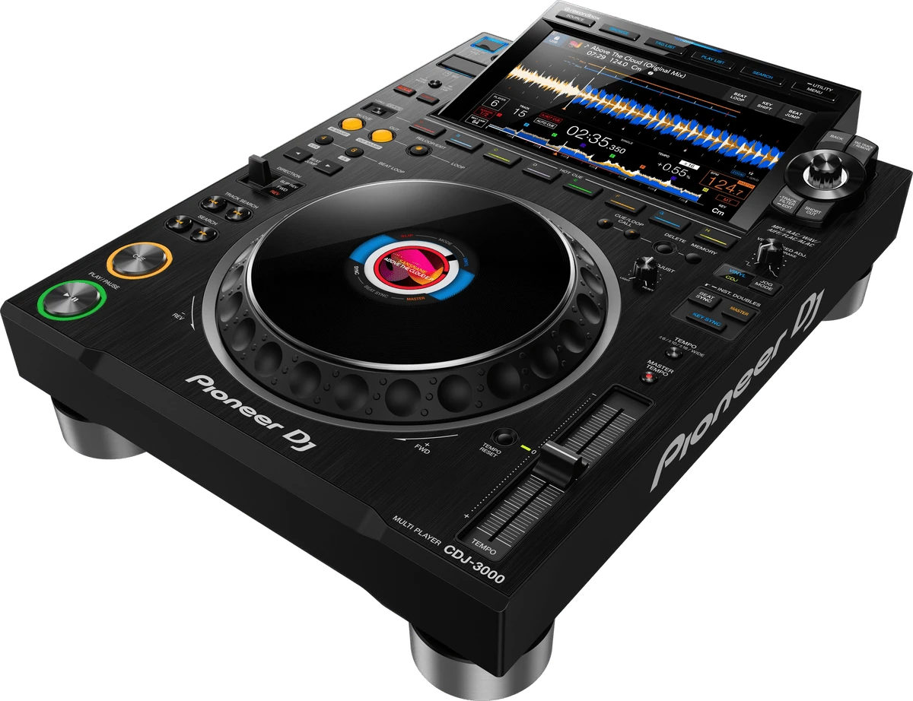
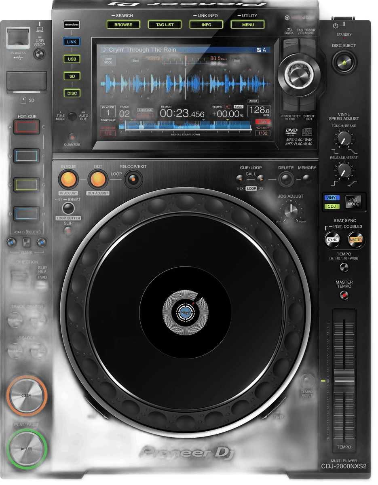
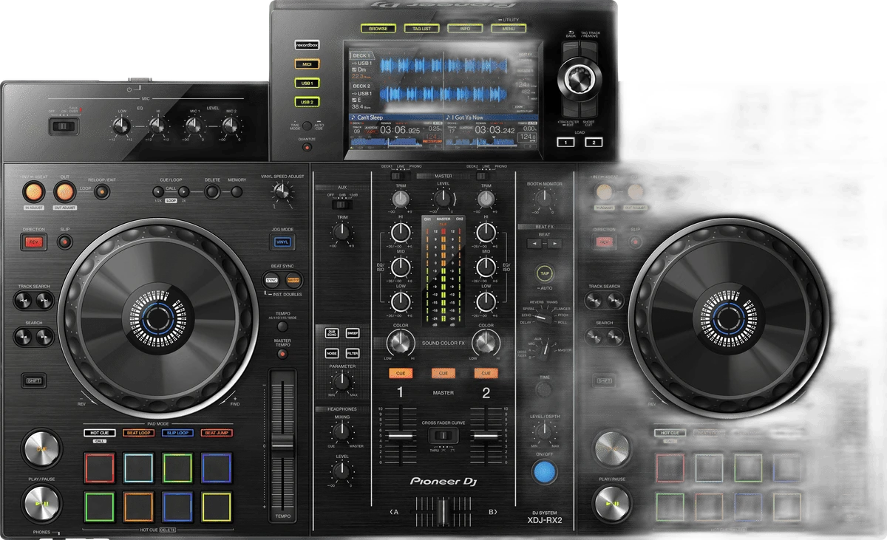
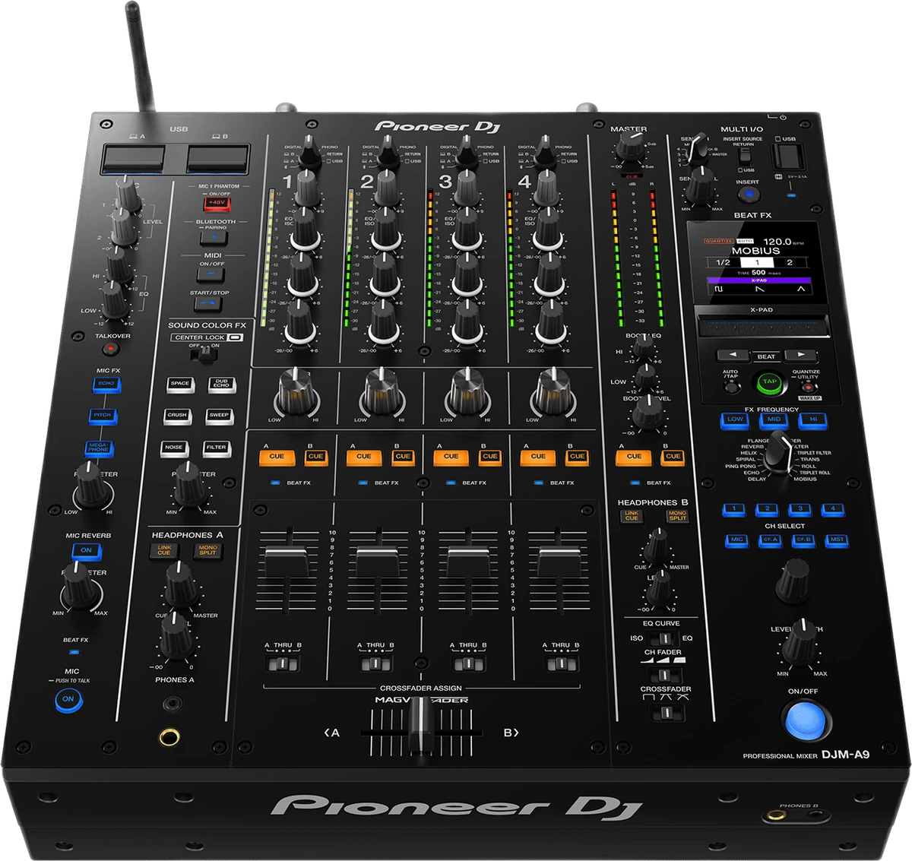
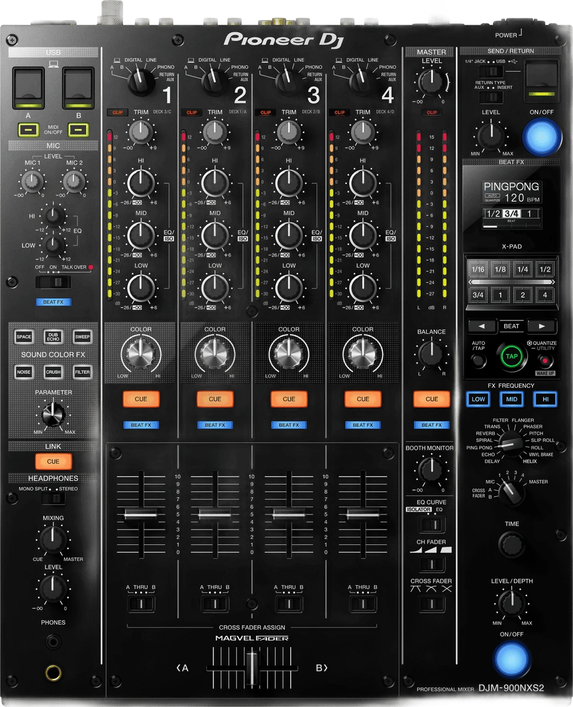
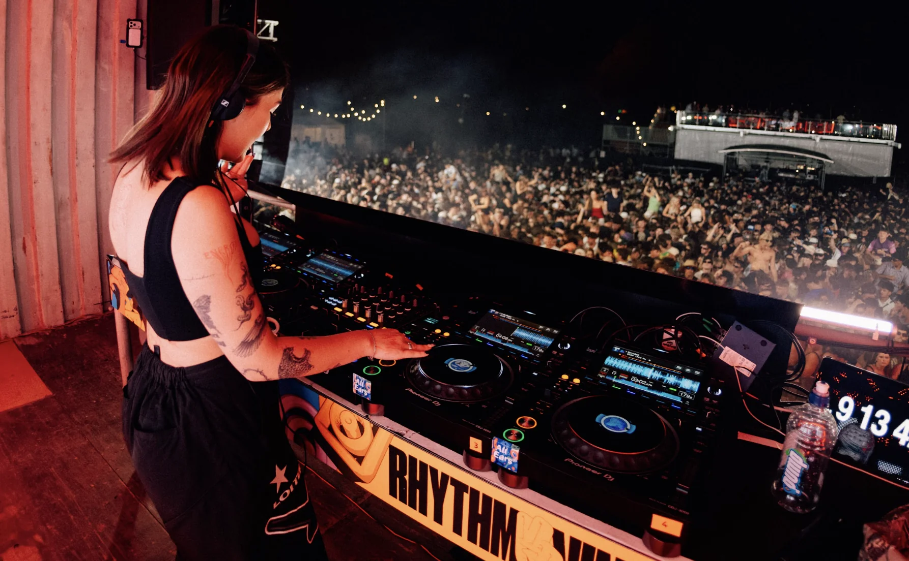
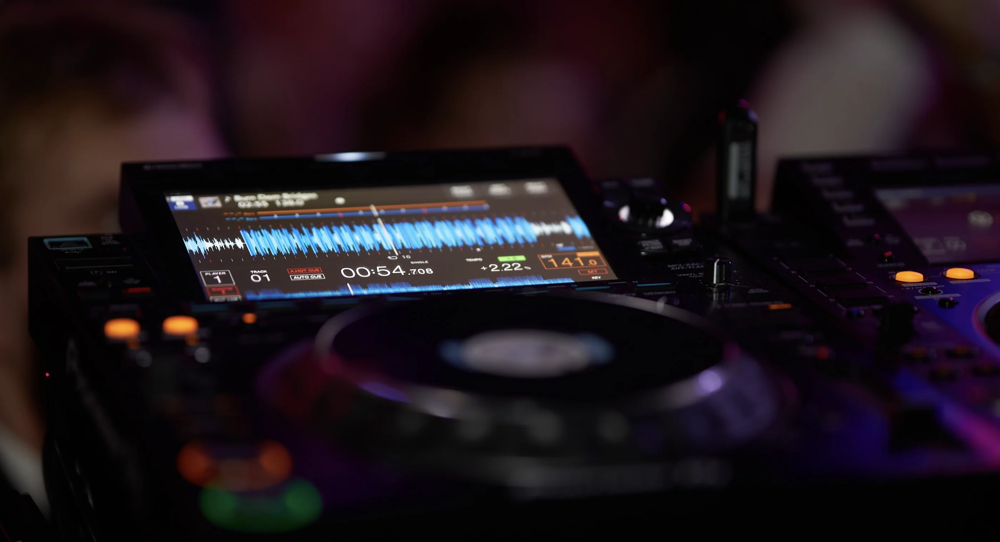

We stock the gear that DJs actually want to play on. All units get checked and cleaned between hires. Hire a single CDJ, a pair for a bar gig, or a full 4-deck setup with mixer, booth monitor, and cabling.
These are standard hire rates. For larger backline packages or multi-day hires, get in touch and we'll put a price together.

$140 +GST per unit
The current flagship. 9-inch touchscreen, improved jog wheels, and 96kHz/24-bit sound. Running the latest firmware.

$130 +GST per unit
The reliable workhorse every DJ knows inside out. Still on riders worldwide and a solid choice for any gig.

$160 +GST per unit
All-in-one 2-channel controller with built-in mixer. Compact, portable, and great for smaller gigs or as a backup.

$140 +GST
The latest 4-channel flagship. Smooth EQ, built-in effects, and studio-grade sound. The new club standard.

$125 +GST
Four channels, solid effects engine, built-in sound card. The proven club mixer that pairs with everything.

Custom-made aluminium cover finished in black that sits over 4x CDJs and a DJ mixer. Blocks direct sunlight so DJs can actually read the screens during outdoor sets. Fits standard Pioneer DJ booth layouts and packs down flat for transport.
$50 +GST per session
We have a studio space at our warehouse on Southwark Street set up with CDJ-3000s and a mixer. Available for practice sessions, set prep, or getting comfortable on the gear before a gig. Book through unit20.nz.

Standard rates above. For larger packages or multi-day hires, we can do a deal.
Get in touch or call 021 178 0355.
Pioneer DJ CDJ-3000s and CDJ-2000NXS2s, plus the XDJ-RX2 all-in-one. Mixer options are the DJM-A9 and DJM-900NXS2. All units are well maintained and running the latest firmware.
Both. Single CDJ, a pair, or a full 4-deck setup with mixer, booth monitor, and all cabling. We can pair it with a speaker package for a complete rig.
A custom-made aluminium cover that sits over 4x CDJs and a mixer. Blocks sunlight so DJs can read screens at outdoor gigs. Fits standard Pioneer DJ layouts and packs down flat.
Yes. $50+GST per session at our warehouse on Southwark Street. CDJ-3000s and a mixer set up and ready to go.
All Ears Events Limited
20 Southwark Street, Christchurch
021 178 0355 · hello@allears.nz
Mon-Fri 9am-4pm